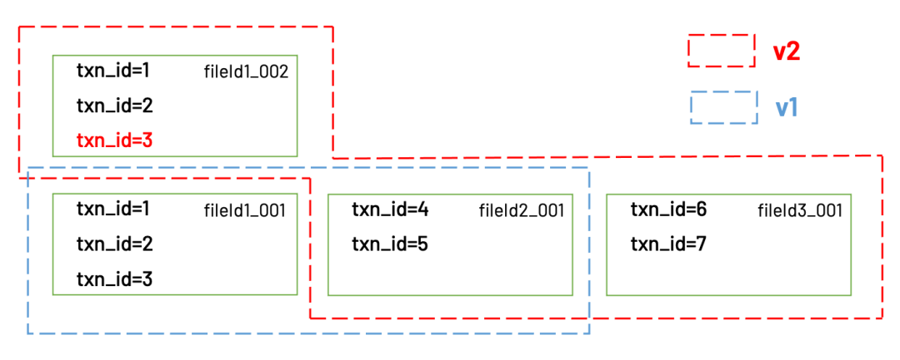
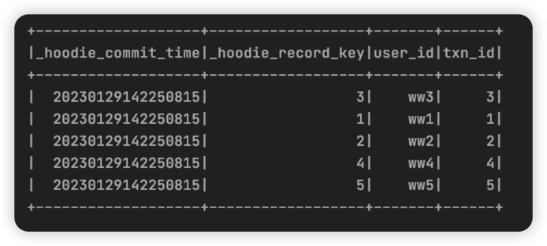
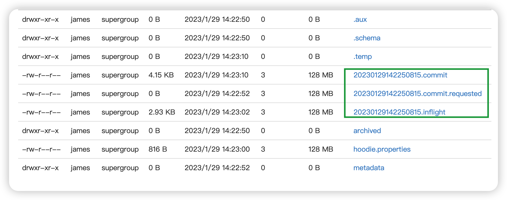
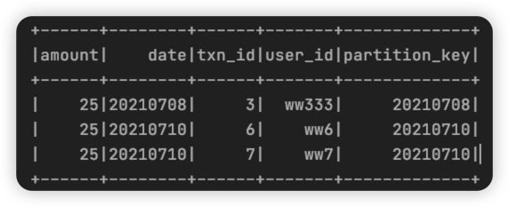
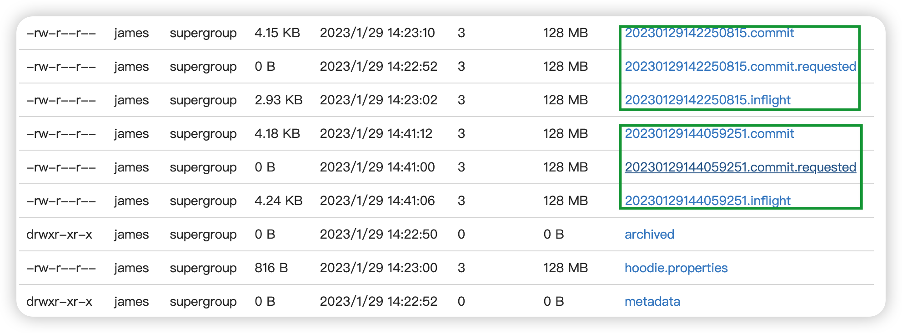
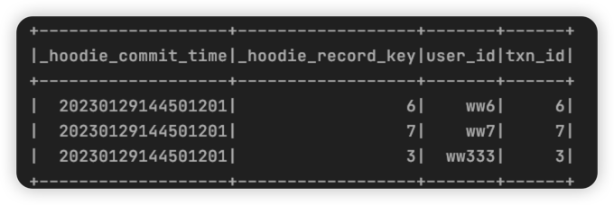
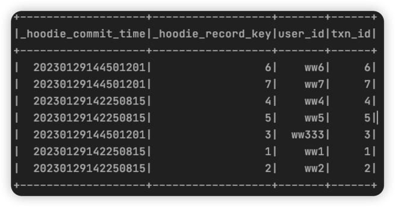

前面的文章中提到过 快照查询，优化查询 其实都是对MOR类型表提的，还有一种增量查询，下面详细介绍一下。
原理解释
这个功能提供给用户“读取任意两个commit之间差分数据”的能力。这个功能也是基于TimeLine 的“多版本数据管理”实现的
我们还是以之前的例子，假设我们想要读取v1 → v2之间的差分数据

Hudi会计算出v2到v1之间的差异是两个文件：fileId01_002和fileId03_001，然后client从这两个文件中读到的就是增量数据。
当然我们知道，fileId01_002里面包含了两条老数据txn_id=1和txn_id=2，不属于v2到v1的差分数据，不应该被读取。确实如此。其实Hudi对每一条数据，都有一个隐藏字段_hoodie_commit_time用于记录commit时间，这个字段会和其他数据字段一起保存在parquet文件里。Hudi在读取parquet文件时，会同时用这个字段对结果进行过滤，把不属于时间范围内的记录都过滤掉。
代码实践
插入一批数据
1
2
3
4
5{"txn_id":1,"user_id":"ww1","amount":90,"date":"20210708"}
{"txn_id":2,"user_id":"ww2","amount":35,"date":"20210708"}
{"txn_id":3,"user_id":"ww3","amount":35,"date":"20210708"}
{"txn_id":4,"user_id":"ww4","amount":45,"date":"20210709"}
{"txn_id":5,"user_id":"ww5","amount":25,"date":"20210709"}执行结果:

此时记录的元数据记录:

更新txn_id=3
1
2
3{"txn_id":3,"user_id":"ww333","amount":25,"date":"20210708"}
{"txn_id":6,"user_id":"ww6","amount":25,"date":"20210710"}
{"txn_id":7,"user_id":"ww7","amount":25,"date":"20210710"}

进行增量查询
1
2
3
4
5
6
7
8
9
10
11
12
13
14
15
16
17
18
19
20
21
22
23
24
25
26
27
28
29
30
31
32
33
34
35
36
37
38
39
40
41
42
43
44
45
46
47
48
49
50
51package com.zxd.prac.hudi
import org.apache.spark.sql.SparkSession
/**
* Created by Intellij IDEA.
* User: 张晓东
* Date: 2022/5/30
*/
object IncrementalQueryFromHudi {
def main(args: Array[String]): Unit = {
val session: SparkSession = SparkSession.builder().master("local")
.config("spark.serializer","org.apache.spark.serializer.KryoSerializer")
.appName("test").getOrCreate()
val basePath = "hdfs://localhost:8020/hudi_batch_tb";
// 第1步、加载Hudi表数据，获取commit time时间，作为增量查询数据阈值
import org.apache.hudi.DataSourceReadOptions._
import session.implicits._
session.read
.format("hudi")
.load(basePath)
.createOrReplaceTempView("view_temp_hudi")
// 第2步、设置Hudi数据CommitTime时间阈值，进行增量数据查询
val incrementalDF = session.read
.format("hudi")
// 设置查询数据模式为：incremental，增量读取
.option(QUERY_TYPE.key(), QUERY_TYPE_INCREMENTAL_OPT_VAL)
// 设置增量读取数据时开始时间-commitTime
.option(BEGIN_INSTANTTIME.key(),20230129144059250L)
.load(basePath)
// 第3步、将增量查询数据注册为临时视图 进行sql查询
incrementalDF.createOrReplaceTempView("hudi_incremental")
session
.sql(
"""
|select
| _hoodie_commit_time,_hoodie_record_key,user_id,txn_id
|from
| hudi_incremental
|
|""".stripMargin
)
.show();
}
}注意代码中设置的INSTANTIME时间戳，结果如下:

在修改时间戳，改成一个更早的值
1
option(BEGIN_INSTANTTIME.key(),20230129140059250L)
结果如下:

利用BEGIN_INSTANTTIME与END_INSTANTTIME 可以选择某一段时间的增量数据，并结合SQL中的过滤条件进行筛选，找到想要的数据.

...
...
00:00
00:00
This is copyright.